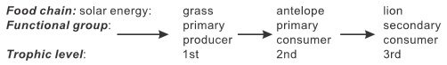
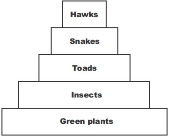
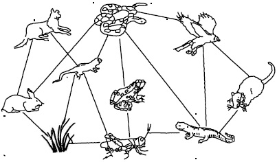
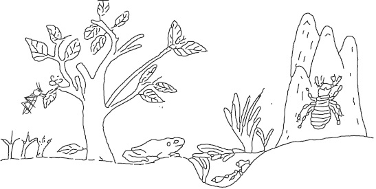

A functioning ecosystem is made up of the living and non living components which
not only interract among themselves but are closely linked by various biological,
chemical and physical processes.
The biotic (living) component of an ecosystem comprises of the Autotrophs but
the abiotic (non living) component consists of the non living materials like carbon
dioxide, oxygen, mineral salts and water which are inorganic materials, food substances
which are organic materials and energy.
In a given ecosystem, energy and nutrients are transfered sequentialy (step by
step) among organisms in a feeding pathway (trophic level). This feeding pathway
always begins with primary producers which are Autotrophs, followed by one or more
consumers then ends with decomposers. A linear feeding relationship among
organisms in the same community in which each organism feeds on the one
before it in the sequence is called a food chain. In nature, there are more complex
feeding relations than food chain shows. A complex feeding relationship consisting
of a network of interrelated food chains is called food web. Each level in a feeding
path way is called trophic level. A given feeding relationship (food chain or food web)
shows energy and nutrients transfer from organism to organism in a feeding pathway.
Energy flow and energy changes
In an ecological system, energy source is usually from the sun .Energy flow takes place
unidirectionally starting from the producer e.g.. grass which traps energy from the sun.
st this energy flows right from the producer (1 trophic level) to the secondary or tertiary
consumer. But as it flows it is only a certain amount of the original energy that is
transferred from one trophic level to the next. Part of the energy in a given trophic level is
lost as heat energy during the orgainsms metabolic activities. Thus we say that there is
an inefficient energy transfer process from the producer to the tertiary consumer which
is in line with the laws of thermodynamics.
This means that for the survival of the biotic component of an ecosystem, there is
need for a constant supply of energy from outside it. This outside energy source is the
sun. Without this energy source life on earth will cease.

Ecological Pyramids
Feeding relationships in an ecosystem can be represented graphically using
ecological pyramid of numbers, pyramid of biomass and pyramid of energy.
Pyramid of numbers: The pyramid of numbers represents the number of
individuals in a given (each) trophic level of a food chain at a given time. The length
of each bar in the pyramid gives appoximate measure of the number of individuals
at that particular trophic level. Generally in most ecosystems the number of
individual organism decreases up the trophic level (from the producer)in the food
chain while the size of the individuals increases. However equal status accorded to
each individual without mindng their great variations in sizes and wide ranges in
figure between producers and consumers introduces odd-shape pyramids of
numbers. These bring in a limitation and disadvantage to the method.
Pyramid of biomass: This represents the sum of the wet or dry masses of the
organisms in each trophic level. Biomass gives a more accurate representation of
the relatioships between the organisms at the various trophic levels in the food
chain than a pyramid of numbers. This can be bacause biomass takes both the size
and the numbers into consideration. Inconsistences that can arise due to equal
status accorded to small sized producers with short life span and large sized
consumers with long life span introduces odd shaped biomass.
Pyramid of energy: The rate of energy flow through each trophic level of a food chain can be represented with pyramid of energy. The pyramid
of energy gives the best way of representing relationship between organisms in the various trophic levels of a food chain. Hence there is always
a great loss of useful energy as food is transferred from one trophic level to the next one up, Apyramid of energy is always upright.
fig11.2:

fig11.3:

Practical Activities
1. A decay process yields carbondioxide, hydrogen sulphide and ammonia. Write briefly one after the other,
how you can identify each of these gases that occur during a decay process.
fig11.4:

The diagram above is an illustration of a community. Draw two possible food chains that occur in the community.
(4a) Write three habitat you can identify in the diagram (i).
(b) What is the trophic level of the toad in the community
General Questions
1. The role of an autotroph in a food chain is
2. What name can you call a unit which comprise of a living community and its physical factors
3. Every food chain must begin with a
4. An ecological
describes the occupation of an organisms in an ecosystem.
5. What is the ultimate source of energy in a food chain
6. A unit of the biosphere in which organisms interract with themselves and their physical environment is called
7.
is a measure of the total mass of the dry organic matter produced in a given area.
8. A
can be used to graphically illustrate the transfer of energy in a food chain.
9. In a functional ecosystem, pyramid of numbers, energy flows, mineral salts in the soil, humus and trophic level are associated with
food chain or food web except
10. In the food chain illustrated here:
Guinea grass → grasshopper → Toad → snake. Which of the
organisms is the secondary consumer and what trophic level does it belong
11. Examine the food chain drawn here:
Diatom → paramecium → water flea → fish.
What type of habitat can this food chain be found?
What is the role of the diatom in the food chain?
12. A complex feeding relationship which consist of interrelated food chains is called
13. Identify the diagram in figure 11.2
State two limitations in using the diagram to represent food relationships as answer to questions 14 and 15
14.
15.
16. Energy transformations in nature are in line with the first and second laws of
17. Name three nutrients cycling in nature
(i) Carbon Cycle (ii) Nitrogen Cycle (iii) Water cycle
Kreb cycle (ii) Citric Acid cycle (iii) Phosphorous cycle
(i) Sulphur cycle (ii) Hydrogen cycle (iii) Citric Acid cycle
18. Write the function of nitrogen fixing bacteria during Nitrogen cycle
Conversion of protein to inorganic nitrogenous compound
Converts atmospheric nitrogen into amino compounds and proteins
Converts nitrites to nitrates
19. Which of the ecological pyramids gives the best way of representing relationship between organisms in the various levels of a food chain.
20. The rate at which primary producers manufacture food per unit area per unit time is called
and the
remainder that is stored is called
Expression Exercises
Teacher's attention required
1
a. State the first and second laws of thermodynamics
1st law
2nd law
b. Write two differences between food chain and food web
Food Chain
Food web
1
2
2a. Study the food web shown in figure 11.3, label and put in the arrow heads.
Teacher's attention required
2b. Draw the pyramid of energy using the food chain below.
Grass --> grasshopper --> toad --> hawk
Teacher's attention required
2c. Write three differences between energy flow and nutrient cycle in an ecological system.
Energy flow
Nutrient cycle
1
2
3
d. State three differences between pyramid of energy and pyramid of numbers.